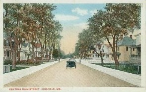

Historical Crisfield
Founded in 1666 by Benjamin Summers, Crisfield was originally known as Annemessex and the cove bordering the land was known as Somers Cove. Annemessex was a typical small Eastern Shore village. Gradually the name of the village was changed to Somers Cove. This came about because boat captains and crews consistently referred to the area by the small cove, a fine docking place which afforded them protection from the weather on the Chesapeake.
In 1854, a Coast and Geodetic survey of the Chesapeake Bay discovered a large number of oyster beds in Tangier Sound adjacent to Somers Cove. John W. Crisfield recognized the importance of this natural resource and pushed the Eastern Shore Railroad from Salisbury to Crisfield. With the advent of the railroad the products of the Chesapeake Bay could move from the Eastern Shore to the lucrative markets of the northeast. In recognition of his contributions to the city, the town fathers changed the name of the city from Somers Cove to Crisfield.
For many years, Crisfield was the leading oyster producing city in the entire United States. The export of this tasty Chesapeake bivalve produced an economic boom in the area and Crisfield rose in prominence throughout the region. The combination of the railroad and the oyster helped fuel the development of secondary industries in the city. Harvested seafood requires cool temperatures in order to keep it fresh and edible. Consequently, a large ice house was built which supplied ice to keep seafood refrigerated in transit.
A coal fired power plant generated the electricity necessary to keep the city and its industries supplied with this source of power. Agricultural packing houses were established which canned vegetables and then took advantage of the railroad for transport of this produce.
A sewing industry took advantage of the expert seamstresses in the area. This industry produced fine finished products for Wall Street clothiers. Many more small businesses were started to serve the local people employed in the major industries. The City of Crisfield was incorporated in 1872.
By 1904 the City of Crisfield was the second largest city in the State of Maryland (first being Baltimore) and one of the finest seaports in the country. It quickly became known as the "Seafood Capital of the World.". The seafood industry, combined with the ability to export seafood and agricultural produce via the railroad drew residents from as far away as New England and the Midwest.
Sources
Maryland Historical Trust
Excerpt from Crisfield Heritage by Jack Paul, Somerset Guide 2003
History of Crisfield and the Surrounding Areas by Woodrow T. Wilson
The Last Waterman by Glenn Lawson
Nationally Prominent Crisfielders
Harry Clifton (Curley) Byrd - President of the University of Maryland, born in Crisfield, often referred to as the "Father of the University of Maryland".
Lt. General Jefferson Fields - Commanding General of Camp Pendleton (1960), Director of Personnel for the entire United States Marine Corp (1962), Commander of the Marine Corps Development Command at Quantico, VA (1968, born in Crisfield.
John Wesley Nelson - Founder of Del Monte canned products, born in Crisfield
Lt. General William W. Quinn - Graduate of West Point, Chief of Information for the Army(1957), Deputy Director of the Defense Intelligence Agency, born in Crisfield.
John Millard Tawes - Maryland State Comptroller, Governor of the State of Maryland (1959-1967), Head of the Maryland Department of Natural Resources, State Treasurer. Governor Tawes is believed to have accomplished something that has never before been done in the history of the State of Maryland, that of filling all three seats on the State Board of Public Works: Governor, Comptroller, and Treasurer.
Lem and Steve Ward - woodcarvers famous for carving wildfowl. Pioneers of the American art of woodcarving, featured in National Geographic Magazine three times. In 1983 Lem Ward received the National Heritage award issued by President Ronald Regan through the National Endowment for the Arts, recognizing both brothers as the fathers of the modern movement in decorative wildlife carving in America.